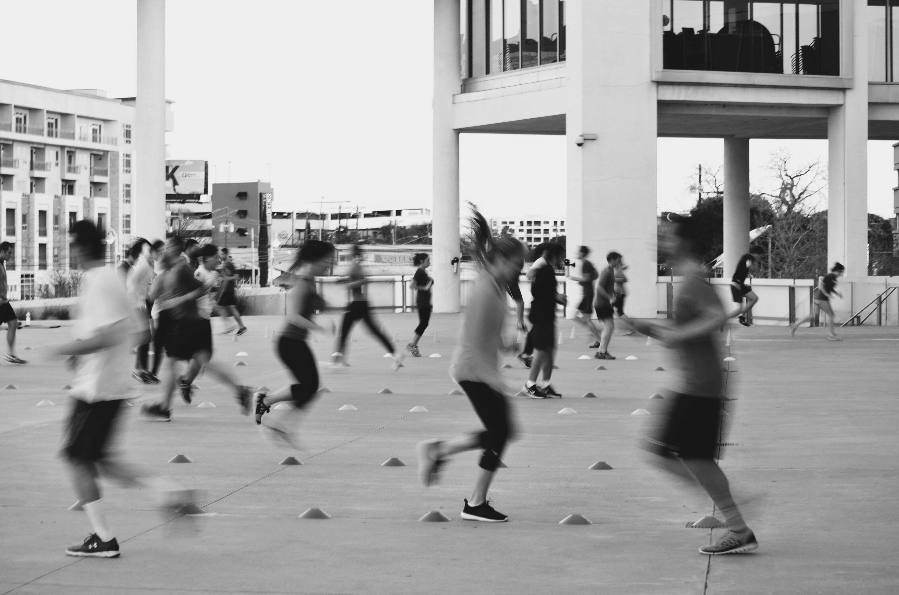
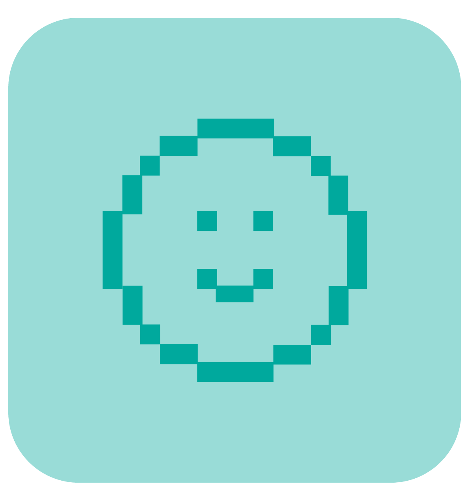
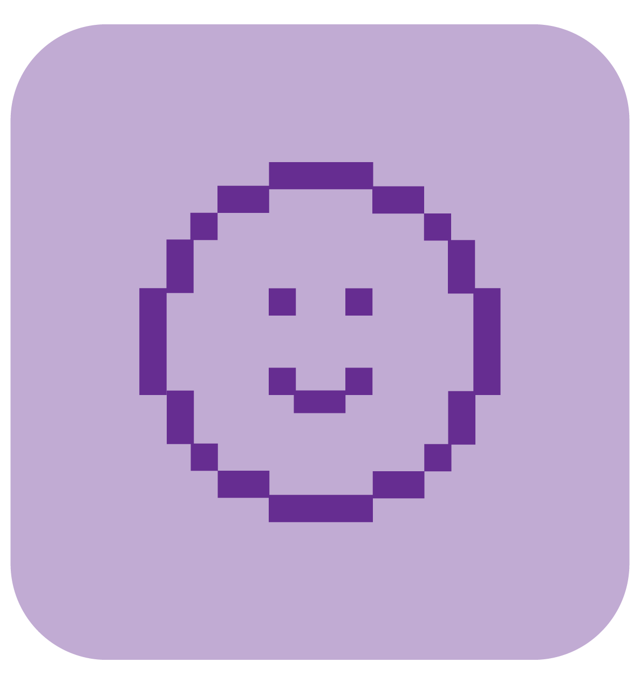

Movimiento consciente

Entendé tu cuerpo
Es un espacio donde integro mi recorrido profesional, mis procesos personales y una manera particular de entender el cuerpo, el aprendizaje y la práctica. Creo en el movimiento como una puerta de entrada al autoconocimiento. Y en la docencia, como una forma de acompañar procesos que dejan huella.
ConocenosNuestros enfoques
Experiencias personales
La experiencia corporal consciente propone una forma diferente de entrenar: no desde la exigencia o la desconexión, sino desde el registro, la presencia y el vínculo con el propio cuerpo.
Mirada profesional
Este espacio propone desarrollar herramientas concretas para observar, interpretar y acompañar esos procesos, integrando lo corporal, lo emocional y lo vincular en la práctica profesional.
Recursos

Más allá del rendimiento
Contenido formativo visual y teórico para profesionales en áreas deportivas.
Eentrenamineto con enfoque en persepción
Programa de 3 meses, prácticas guiadas y ejercicios de registro corporal.
La frustración del profesional
Contenido formativo visual y teórico para profesionales.
Ver másTestimonios
Relatos de un equilibrio que se va construyendo.
“Antes entrenaba por obligación, hoy lo hago desde otro lugar. Entendí mis tiempos, mi cuerpo y lo que necesito.”
Juliana Gómez
Programa consciente

“Dejé de pelearme con la comida y con el ejercicio. Empecé a encontrar un ritmo que me hace bien de verdad.”
Agustina López
Cursos profesionales

“Lo más importante no fue cambiar mi rutina, sino la forma en la que me relaciono conmigo.”
Lola Frias
Cursos de frustración
"No se trata solo de qué enseñás, sino de qué experiencias generás y qué procesos lográs sostener"